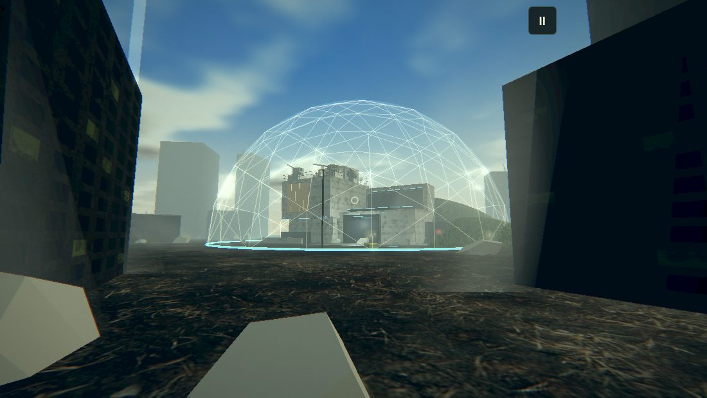
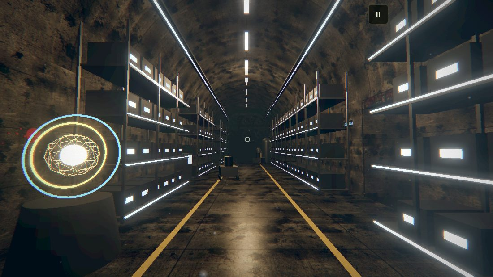
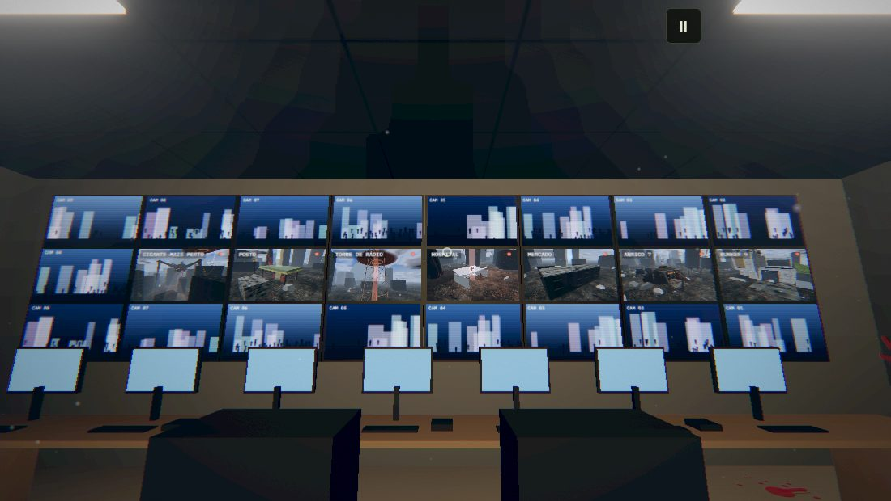
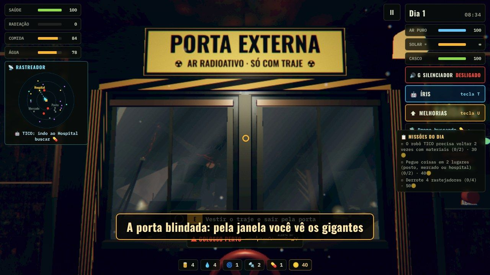
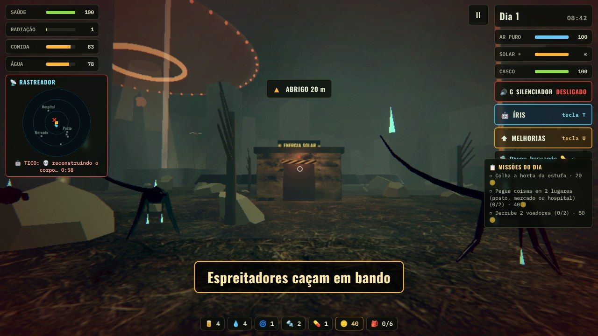

Como instalar
📱 No celular (APK)
- Toque em Baixar para celular.
- Abra o arquivo UltimoAbrigo.apk que baixou.
- Se o celular pedir, permita instalar apps desconhecidos.
- Toque em Instalar e depois em Abrir. Pronto!
💻 No computador (HTML)
- Clique em Baixar para computador.
- Abra o arquivo UltimoAbrigo.html com dois cliques.
- Ele abre no navegador (Chrome, Edge ou Firefox) e já dá para jogar, até sem internet.
- Ou clique em Jogar agora para jogar direto, sem baixar.
Novidades da versão 4.5
Um bunker desconhecido perto do mercado. Descubra, ative com 2 peças e converse com a JARVIS.
Um túnel em arco cheio de comida, com prateleiras e luz azul. Pegue suprimentos todo dia.
A sala de câmeras do Bunker 9 vigia o abrigo, o mercado, o hospital, a torre, o posto e o gigante mais perto.
O Bunker 9 tem gerador próprio e uma cúpula que protege você e empurra os monstros para fora.
Suba a escada até o telhado: torretas, mísseis, radar e o arsenal.
Corredores com tubos de luz laranja e uma oficina que conserta o casco do abrigo.
Veja o jogo
Imagens






Sobre o jogo
Naves alienígenas cobriram o céu e soltaram os colossos, monstros gigantes que caçam tudo o que faz barulho. Você está no Abrigo 7, um bunker subterrâneo. Cuide da comida, da água e do ar, saia na superfície para buscar suprimentos, descubra o Bunker 9 e aguente até o resgate do dia 10.
Colossos de 50 metros, espreitadores, rastejadores e voadores. À noite chegam até 10 gigantes.
Apagões, a Sombra no corredor, patas furando o teto e o coração batendo quando o perigo chega perto.
O robô TICO busca peças sozinho, a ÍRIS cuida do Abrigo 7 e a JARVIS cuida do Bunker 9.
Crie uma sala e jogue junto, cada um no seu aparelho.
Controles
- Computador: ande com W A S D, olhe com o mouse, segure E para usar, atire com o clique ou ESPAÇO, lanterna no F, fale com a IA no T.
- Celular: ande com o controle da esquerda, arraste a tela para olhar e use os botões da direita.